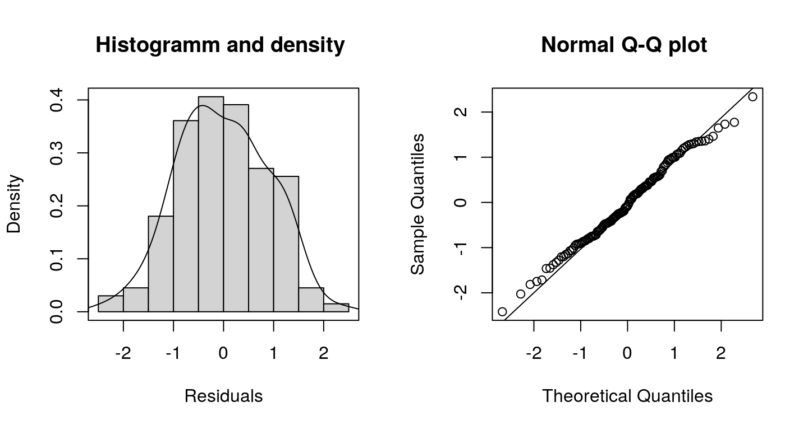
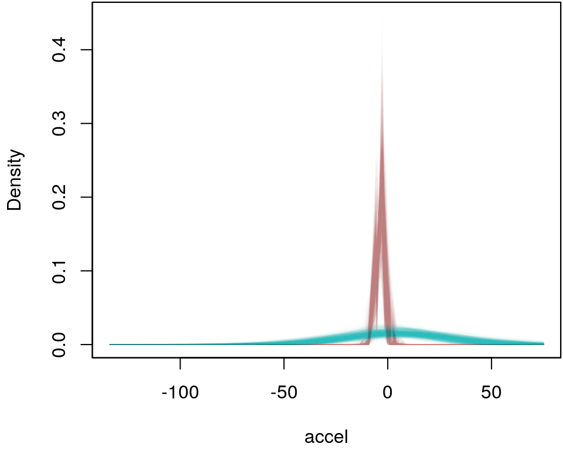

A Lego Toolbox for Flexible Bayesian Regression (and Beyond)
Nikolaus Umlauf, Nadja Klein, Achim Zeileis, Thorsten Simon
bamlss.RmdOverview
The R package bamlss provides a modular computational framework for flexible Bayesian regression models (and beyond). The implementation follows the conceptional framework presented in Umlauf, Klein, and Zeileis (2018) and provides a modular “Lego toolbox” for setting up regression models. In this setting not only the response distribution or the regression terms are “Lego bricks” but also the estimation algorithm or the MCMC sampler.
The highlights of the package are:
- The usual R “look & feel” for regression modeling.
- Estimation of classic (GAM-type) regression models (Bayesian or frequentist).
- Estimation of flexible (GAMLSS-type) distributional regression models.
- An extensible “plug & play” approach for regression terms.
- Modular combinations of fitting algorithms and samplers.
Especially the last item is notable because the models in bamlss are not limited to a specific estimation algorithm but different engines can be plugged in without necessitating changes in other aspects of the model specification.
More detailed overviews and examples are provided in the articles:
- Available Model Terms
- BAMLSS Families
- BAMLSS Model Frame
- Estimation Engines
- Bayesian Joint Models for Longitudinal and Survival Data
- Bayesian Multinomial Regression
- Bivariate Gaussian models for wind vectors
- Complex Space-Time Interactions in a Cox Model
- Generalized Linear Models (+)
- LASSO-Type Penalization in the Framework of Generalized Additive Models for Location, Scale and Shape
- Munich Rent Model
- Spatial Location-Scale Model
Installation
The stable release version of bamlss is hosted on the Comprehensive R Archive Network (CRAN) at https://CRAN.R-project.org/package=bamlss and can be installed via
The development version of bamlss is hosted on R-Forge at https://R-Forge.R-project.org/projects/bayesr/ in a Subversion (SVN) repository. It can be installed via
Basic Bayesian regression
This section gives a first quick overview of the functionality of the package and demonstrates that the usual “look & feel” when using well-established model fitting functions like glm() is an elementary part of bamlss, i.e., first steps and basic handling of the package should be relatively simple. We illustrate the first steps with bamlss using a data set taken from the Regression Book (Fahrmeir et al. 2013) which is about prices of used VW Golf cars. The data is loaded with
## price age kilometer tia abs sunroof
## 1 7.30 73 10 12 yes yes
## 2 3.85 115 30 20 yes no
## 3 2.95 127 43 6 no yes
## 4 4.80 104 54 25 yes yes
## 5 6.20 86 57 23 no no
## 6 5.90 74 57 25 yes noIn this example the aim is to model the price in 1000 Euro. Using bamlss a first Bayesian linear model could be set up by first specifying a model formula
afterwards the fully Bayesian model using MCMC simulation is estimated by
Note that the default number of iterations for the MCMC sampler is 1200, the burnin-phase is 200 and thinning is 1 (see the manual of the default MCMC sampler sam_GMCMC()). The reason is that during the modeling process, users usually want to obtain first results rather quickly. Afterwards, if a final model is estimated the number of iterations of the sampler is usually set much higher to get close to i.i.d. samples from the posterior distribution. To obtain reasonable starting values for the MCMC sampler we run a backfitting algorithm that optimizes the posterior mode. The bamlss package uses its own family objects, which can be specified as characters using the bamlss() wrapper, in this case family = "gaussian" (see also BAMLSS Families). In addition, the package also supports all families provided from the gamlss families.
The model summary gives
##
## Call:
## bamlss(formula = f, family = "gaussian", data = Golf)
## ---
## Family: gaussian
## Link function: mu = identity, sigma = log
## *---
## Formula mu:
## ---
## price ~ age + kilometer + tia + abs + sunroof
## -
## Parametric coefficients:
## Mean 2.5% 50% 97.5% parameters
## (Intercept) 9.333318 8.526293 9.330200 10.173709 9.311
## age -0.038461 -0.045355 -0.038341 -0.031706 -0.038
## kilometer -0.009686 -0.012547 -0.009667 -0.007061 -0.010
## tia -0.005811 -0.022870 -0.005752 0.010105 -0.005
## absyes -0.240481 -0.492048 -0.237776 -0.003060 -0.238
## sunroofyes -0.024021 -0.300878 -0.025127 0.238145 -0.010
## -
## Acceptance probability:
## Mean 2.5% 50% 97.5%
## alpha 1 1 1 1
## ---
## Formula sigma:
## ---
## sigma ~ 1
## -
## Parametric coefficients:
## Mean 2.5% 50% 97.5% parameters
## (Intercept) -0.2457 -0.3479 -0.2465 -0.1274 -0.271
## -
## Acceptance probability:
## Mean 2.5% 50% 97.5%
## alpha 0.9703 0.7652 1.0000 1
## ---
## Sampler summary:
## -
## DIC = 408.9675 logLik = -201.0372 pd = 6.8932
## runtime = 1.461
## ---
## Optimizer summary:
## -
## AICc = 409.6319 edf = 7 logLik = -197.4745
## logPost = -252.2614 nobs = 172 runtime = 0.022indicating high acceptance rates as reported by the alpha parameter in the linear model output, which is a sign of good mixing of the MCMC chains. The mixing can also be inspected graphically by
 Note, for convenience we only show the traceplots of the intercepts. Considering significance of the estimated effects, only variables
Note, for convenience we only show the traceplots of the intercepts. Considering significance of the estimated effects, only variables tia and sunroof seem to have no effect on price since the credible intervals of estimated parameters contain zero. This information can also be extracted using the implemented confint() method.
## 2.5% 97.5%
## mu.(Intercept) 8.52629257 10.173709336
## mu.age -0.04535461 -0.031705531
## mu.kilometer -0.01254739 -0.007060627
## mu.tia -0.02286985 0.010105028
## mu.absyes -0.49204765 -0.003060006
## mu.sunroofyes -0.30087769 0.238144948
## sigma.(Intercept) -0.34791813 -0.127380063Since the prices cannot be negative, a possible consideration is to use a logarithmic transformation of the response price
set.seed(111)
f <- log(price) ~ age + kilometer + tia + abs + sunroof
b2 <- bamlss(f, family = "gaussian", data = Golf)and compare the models using the DIC()
## DIC pd
## b1 408.96754 6.893153
## b2 -15.19596 6.893153indicating that the transformation seems to improve the model fit.
Instead of using linear effects, another option would be to use polynomial regression for covariates age, kilometer and tia. A polynomial model using polynomials of order 3 is estimated with
set.seed(222)
f <- log(price) ~ poly(age, 3) + poly(kilometer, 3) + poly(tia, 3) + abs + sunroof
b3 <- bamlss(f, family = "gaussian", data = Golf)Comparing the models using the DIC() function
## DIC pd
## b1 408.96754 6.893153
## b2 -15.19596 6.893153
## b3 -10.78925 13.186991suggests that the polynomial model is not really an improvement, however, this is probably caused by an insignificant tia effect. The effects can be inspected graphically, to better understand their influence on price. Using the polynomial model, graphical inspections can be done using the predict() method.
One major difference compared to other regression model implementations is that predictions can be made for single variables, only, where the user does not have to create a new data frame containing all variables. For example, posterior mean estimates and 95% credible intervals for variable age can be obtained by
nd <- data.frame("age" = seq(min(Golf$age), max(Golf$age), length = 100))
nd$page <- predict(b3, newdata = nd, model = "mu", term = "age",
FUN = c95, intercept = FALSE)
head(nd)## age page.2.5% page.Mean page.97.5%
## 1 65.00000 0.3085312 0.4849915 0.6592331
## 2 65.77778 0.3120472 0.4757206 0.6362999
## 3 66.55556 0.3167776 0.4663256 0.6152946
## 4 67.33333 0.3172396 0.4568109 0.5950657
## 5 68.11111 0.3201536 0.4471811 0.5742218
## 6 68.88889 0.3202023 0.4374406 0.5555146Note that the prediction does not include the model intercept. Similarly for variables kilometer and tia
nd$kilometer <- seq(min(Golf$kilometer), max(Golf$kilometer), length = 100)
nd$tia <- seq(min(Golf$tia), max(Golf$tia), length = 100)
nd$pkilometer <- predict(b3, newdata = nd, model = "mu", term = "kilometer",
FUN = c95, intercept = FALSE)
nd$ptia <- predict(b3, newdata = nd, model = "mu", term = "tia",
FUN = c95, intercept = FALSE)Here, we need to specify for which model predictions should be calculated, and if predictions only for variable age are created, argument term needs also be specified. Argument FUN can be any function that should be applied on the samples of the linear predictor. For more examples see the documentation of the predict.bamlss() method.
Then, the estimated effects can be visualized with
par(mfrow = c(1, 3))
ylim <- range(c(nd$page, nd$pkilometer, nd$ptia))
plot2d(page ~ age, data = nd, ylim = ylim)
plot2d(pkilometer ~ kilometer, data = nd, ylim = ylim)
plot2d(ptia ~ tia, data = nd, ylim = ylim) The figure clearly shows the negative effect on the logarithmic
The figure clearly shows the negative effect on the logarithmic price for variable age and kilometer. The effect of tia is not significant according the 95% credible intervals, since the interval always contains the zero horizontal line.
Location-scale model
As a second startup on how to use bamlss for full distributional regression, we illustrate the basic steps on a small textbook example using the well-known simulated motorcycle accident data (Silverman 1985). The data contain measurements of the head acceleration (in \(g\), variable accel) in a simulated motorcycle accident, recorded in milliseconds after impact (variable times).
## times accel
## 1 2.4 0.0
## 2 2.6 -1.3
## 3 3.2 -2.7
## 4 3.6 0.0
## 5 4.0 -2.7
## 6 6.2 -2.7To estimate a Gaussian location-scale model with \[ \texttt{accel} \sim \mathcal{N}(\mu = f(\texttt{times}), \log(\sigma) = f(\texttt{times})) \] we use the following model formula
where s() is the smooth term constructor from the mgcv (Wood 2020). Note, that formulae are provided as lists of formulae, i.e., each list entry represents one parameter of the response distribution. Also note that all smooth terms, i.e., te(), ti(), etc., are supported by bamlss. This way, it is also possible to incorporate user defined model terms. A fully Bayesian model is the estimated with
using the default of 1200 iterations of the MCMC sampler to obtain first results quickly (see the documentation sam_GMCMC() for further details on tuning parameters). Note that per default bamlss() uses a backfitting algorithm to compute posterior mode estimates, afterwards these estimates are used as starting values for the MCMC chains. The returned object is of class "bamlss" for which generic extractor functions like summary(), plot(), predict(), etc., are provided. For example, the estimated effects for distribution parameters mu and sigma can be visualized by
 The model summary gives
The model summary gives
##
## Call:
## bamlss(formula = f, family = "gaussian", data = mcycle)
## ---
## Family: gaussian
## Link function: mu = identity, sigma = log
## *---
## Formula mu:
## ---
## accel ~ s(times, k = 20)
## -
## Parametric coefficients:
## Mean 2.5% 50% 97.5% parameters
## (Intercept) -25.13 -29.36 -25.35 -20.34 -25.14
## -
## Acceptance probability:
## Mean 2.5% 50% 97.5%
## alpha 1 1 1 1
## -
## Smooth terms:
## Mean 2.5% 50% 97.5% parameters
## s(times).tau21 425657.47 175634.81 372121.15 914429.32 209325.2
## s(times).alpha 1.00 1.00 1.00 1.00 NA
## s(times).edf 14.24 12.64 14.22 15.97 13.6
## ---
## Formula sigma:
## ---
## sigma ~ s(times, k = 20)
## -
## Parametric coefficients:
## Mean 2.5% 50% 97.5% parameters
## (Intercept) 2.680 2.549 2.676 2.831 2.581
## -
## Acceptance probability:
## Mean 2.5% 50% 97.5%
## alpha 0.9664 0.7510 1.0000 1
## -
## Smooth terms:
## Mean 2.5% 50% 97.5% parameters
## s(times).tau21 1.458e+02 2.384e+01 1.213e+02 4.604e+02 81.406
## s(times).alpha 5.385e-01 7.903e-04 5.069e-01 1.000e+00 NA
## s(times).edf 9.415e+00 6.491e+00 9.500e+00 1.259e+01 8.675
## ---
## Sampler summary:
## -
## DIC = 1115.068 logLik = -545.2265 pd = 24.6149
## runtime = 3.401
## ---
## Optimizer summary:
## -
## AICc = 1123.881 edf = 24.2718 logLik = -531.975
## logPost = -747.4106 nobs = 133 runtime = 0.371showing, e.g., the acceptance probabilities of the MCMC chains (alpha), the estimated degrees of freedom of the optimizer and the successive sampler (edf), the final AIC and DIC as well as parametric model coefficients (in this case only the intercepts). As mentioned in the first example, using MCMC involves convergence checks of the sampled parameters. The easiest diagnostics are traceplots
 Note again that this call would show all traceplots, for convenience we only show the plots for the intercepts. In this case, the traceplots do not indicate convergence of the Markov chains for parameter
Note again that this call would show all traceplots, for convenience we only show the plots for the intercepts. In this case, the traceplots do not indicate convergence of the Markov chains for parameter "mu". To fix this, the number of iterations can be increased and also the burnin and thinning parameters can be adapted (see sam_GMCMC()). Further inspections are the maximum autocorrelation of all parameters, using plot.bamlss() setting argument which = "max-acf", besides other convergence diagnostics, e.g., diagnostics that are part of the coda package (Plummer et al. 2006).
Inspecting randomized quantile residuals (Dunn and Smyth 1996) is useful for judging how well the model fits to the data
 Randomized quantile residuals are the default method in bamlss, which are computed using the CDF function of the corresponding family object.
The posterior mean including 95% credible intervals for new data based on MCMC samples for parameter \(\mu\) can be computed by
nd <- data.frame("times" = seq(2.4, 57.6, length = 100))
nd$ptimes <- predict(b, newdata = nd, model = "mu", FUN = c95)
plot2d(ptimes ~ times, data = nd) and as above in the first example, argument
and as above in the first example, argument FUN can be any function, e.g., the identity() function could be used to calculate other statistics of the distribution, e.g., plot the estimated densities for each iteration of the MCMC sampler for times = 10 and times = 40:
## Predict for the two scenarios.
nd <- data.frame("times" = c(10, 40))
ptimes <- predict(b, newdata = nd, FUN = identity, type = "parameter")
## Extract the family object.
fam <- family(b)
## Compute densities.
dens <- list("t10" = NULL, "t40" = NULL)
for(i in 1:ncol(ptimes$mu)) {
## Densities for times = 10.
par <- list(
"mu" = ptimes$mu[1, i, drop = TRUE],
"sigma" = ptimes$sigma[1, i, drop = TRUE]
)
dens$t10 <- cbind(dens$t10, fam$d(mcycle$accel, par))
## Densities for times = 40.
par <- list(
"mu" = ptimes$mu[2, i, drop = TRUE],
"sigma" = ptimes$sigma[2, i, drop = TRUE]
)
dens$t40 <- cbind(dens$t40, fam$d(mcycle$accel, par))
}
## Visualize.
par(mar = c(4.1, 4.1, 0.1, 0.1))
col <- rainbow_hcl(2, alpha = 0.01)
plot2d(dens$t10 ~ accel, data = mcycle,
col.lines = col[1], ylab = "Density")
plot2d(dens$t40 ~ accel, data = mcycle,
col.lines = col[2], add = TRUE)
References
Dunn, Peter K., and Gordon K. Smyth. 1996. “Randomized Quantile Residuals.” Journal of Computational and Graphical Statistics 5 (3). American Statistical Association, Institute of Mathematical Statistics,; Interface Foundation of America: 236–44.
Fahrmeir, Ludwig, Thomas Kneib, Stefan Lang, and Brian Marx. 2013. Regression – Models, Methods and Applications. Berlin: Springer-Verlag.
Plummer, Martyn, Nicky Best, Kate Cowles, and Karen Vines. 2006. “coda: Convergence Diagnosis and Output Analysis for MCMC.” R News 6 (1): 7–11. https://doi.org/10.18637/jss.v021.i11.
Silverman, B. W. 1985. “Some Aspects of the Spline Smoothing Approach to Non-Parametric Regression Curve Fitting.” Journal of the Royal Statistical Society. Series B (Methodological) 47 (1). [Royal Statistical Society, Wiley]: 1–52.
Umlauf, Nikolaus, Nadja Klein, and Achim Zeileis. 2018. “BAMLSS: Bayesian Additive Models for Location, Scale and Shape (and Beyond).” Journal of Computational and Graphical Statistics 27 (3): 612–27. https://doi.org/10.1080/10618600.2017.1407325.
Umlauf, Nikolaus, Nadja Klein, Achim Zeileis, and Thorsten Simon. 2021. bamlss: Bayesian Additive Models for Location Scale and Shape (and Beyond). https://CRAN.R-project.org/package=bamlss.
Wood, S. N. 2020. mgcv: GAMs with Gcv/Aic/Reml Smoothness Estimation and Gamms by Pql. https://CRAN.R-project.org/package=mgcv.